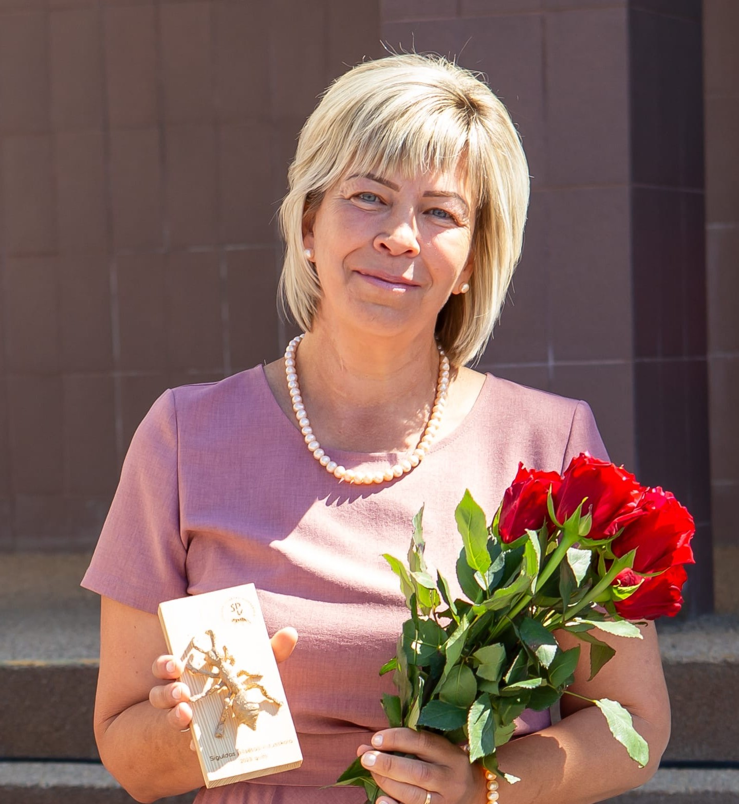

"Ja ir savstarpējas un cieņpilnas attiecības, ikdienā var paveikt lielas lietas."
Siguldas pilsētas vidusskolā strādā kopš 2011.gada
Intervētājs Ričards Grants
Kā Jūs sākāt strādāt Siguldas pilsētas vidusskolā, un cik ilgi jau šeit strādājat?
Es Siguldas pilsētas vidusskolā strādāju no tās pastāvēšanas pirmās dienas. Skola izveidojās, apvienojot divas skolas Siguldas novada izglītības reformas laikā. Tas nozīmē, ka šajā skolā strādāju jau 15 gadus, lai gan mans kopējais darba stāžs ir krietni lielāks.
Kāda bija skola, kad Jūs sākāt strādāt, un kā tā ir mainījusies šo gadu laikā?
Skola ir ļoti mainījusies. Vispirms mēs esam ieguvuši lielākas, lai gan ne jaunas telpas. Esam kļuvuši par skolēniem bagātāko skolu novadā, un par mums zina un runā arī plašākā sabiedrībā. Tomēr es ļoti gaidu renovāciju, jaunas un modernas telpas.
Kādas ir spilgtākās atmiņas no Jūsu darba šajā skolā?
Visvairāk atmiņā palicis attālināto mācību laiks. Šādam pavērsienam mēs nebijām gatavi. Tika organizēti kursi un apmācības, lai saprastu, kā rīkoties tālāk, kā turpināt izglītības procesu un kā nepazust datoros, jo bieži vien darba diena ieilga līdz pusnaktij. Tas bija liels pārbaudījums gan skolotājiem, gan skolēniem.
Kā ir mainījušies skolēni pa šiem gadiem?
Skolēni ir kļuvuši atvērtāki, pieaugušāki un skolotāju uztver vairāk kā draugu un cilvēku, kuram var uzticēties. Strādājot vidusskolā, es jūtu, ka starp mani un skolēniem ir līdzsvars — mēs komunicējam kā vienlīdzīgi.
Kas Jums visvairāk patīk, strādājot ar skolēniem?
Man patīk sadarbība ar jauniešiem, jo, ja ir savstarpējas un cieņpilnas attiecības, ikdienā var paveikt lielas lietas. Ir ļoti svarīgi komunicēt, izrunāt visas situācijas un starpgadījumus, kā arī visu atrisināt mierīgi. Man ir prieks, ka lielākā daļa skolēnu to saprot un pieņem. Ja ir savstarpējas un cieņpilnas attiecības, ikdienā var paveikt lielas lietas.
Kādi izaicinājumi skolotājas darbā ir bijuši visgrūtākie?
Lielākais izaicinājums bija attālinātās mācības. Bija nepieciešamas digitālās prasmes, darbs dažādās platformās, kā arī laiks, lai visu apgūtu un saprastu. Tas ietekmēja arī veselību.
Ar ko, Jūsuprāt, šī skola ir īpaša salīdzinājumā ar citām?
Mūsu skolā galvenais ir ikviens skolēns, kas šeit mācās, jo mums ir svarīgs cilvēks un tas, lai viņš skolā justos labi un nāktu uz to ar prieku. Mēs darām daudz dažādu lietu, piedalāmies projektos un pasākumos, kā arī esam redzami ārpus skolas. Skolēni var paši darboties un aicināt citus līdzdarboties.
Kādu Jūs redzat skolas nākotni pēc 10 - 15 gadiem?
Es ceru, ka skola tuvākajos gados piedzīvos renovāciju un kļūs par skaistu, modernu un mūsdienīgu vidi. Tā harmoniski iekļausies Siguldas pilsētvidē, tai būs labiekārtota apkārtne, daudz koku, krūmu un ziedošu puķu. Tā būs arī vieta, kur satikties bijušajiem skolotājiem, skolas darbiniekiem un skolēniem.
Kā skola ir ietekmējusi Jūsu dzīvi ārpus darba?
Skola ir bijusi ļoti nozīmīga daļa manā dzīvē. Tā ir veidojusi ne tikai manu profesionālo pieredzi, bet arī attieksmi pret cilvēkiem, darbu un dzīvi kopumā. Ilgajos darba gados esmu sastapusi daudz dažādu skolēnu un kolēģu, kuri atstājuši paliekošas atmiņas. Ir patīkami satikt bijušos skolēnus, aprunāties un uzzināt, kā viņi ir iekārtojušies dzīvē, kādu profesiju izvēlējušies un ko sasnieguši.
SĀKUMS